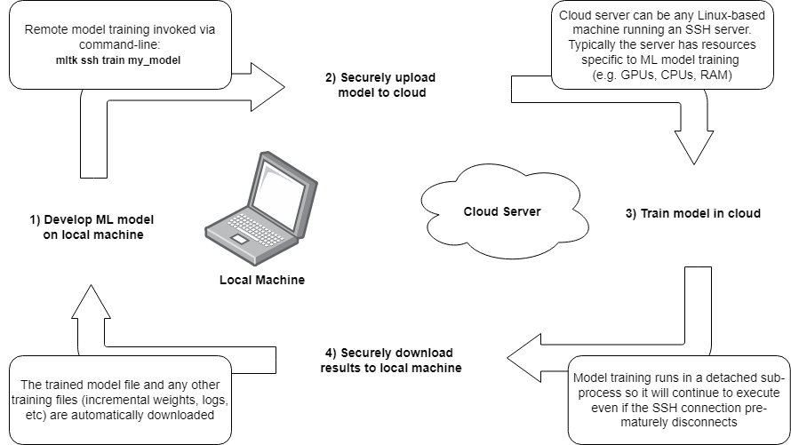
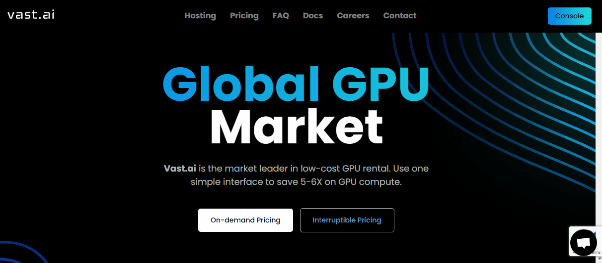
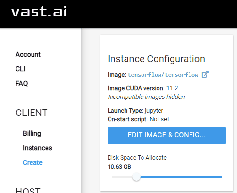
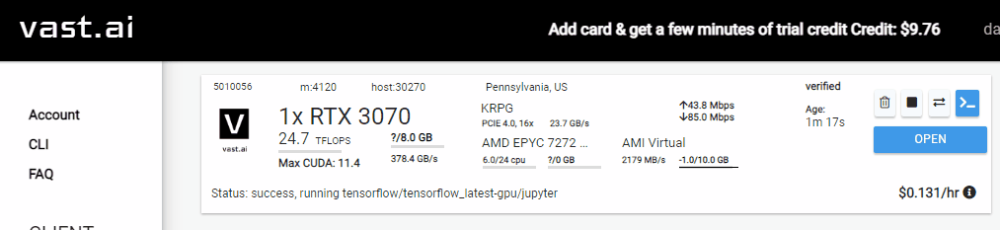

Cloud Training with vast.ai¶
Training a machine learning model can be a very computationally expensive operation which can take hours (if not days) to complete on a typical laptop or desktop. As such, many third-parties offer solutions that allow for renting large cloud-connected machines with lots of GPUs, CPUs, and RAM which can greatly improvement model training times.
One such third-party is vast.ai:
Vast.ai is a cloud computing, matchmaking and aggregation service focused on lowering the price of compute-intensive workloads. Our software allows anyone to easily become a host by renting out their hardware. Our web search interface allows users to quickly find the best deals for compute according to their specific requirements.
This tutorial describes how to use the mltk ssh train command to train a model on vast.ai. With this, you can develop your model locally then quickly and seamlessly train it in the cloud, reducing the training time by 10x or more.
NOTE: While this tutorial shows how to train a model using vast.ai, the mltk ssh train command with work with any Linux-based SSH server.
Disclaimer¶
CAUTION: vast.ai is not free! A credit card is required. vast.ai is a paid, third-party service that is not affiliated with Silicon Labs. Silicon Labs is not responsible for any losses incurred while using this software. Refer to the MLTK License for the terms of use of this software.
The cost of training a model is dependent on:
The chosen cloud machine. Some machines can cost $0.20/hr while others may cost $9.00/hr
The amount of time the machine is in use (billed by the second)
Refer to the vast.ai FAQ for more details about how billing works.
In this tutorial, we credit our account with $10 which is more than enough to train the keyword_spotting_on_off_v2 model in less than one hour (note that on typical laptops, it can take 12hr+ to train this model).
Quick Links¶
Model Training via SSH Guide - Guide for using the
mltk sshcommand-linevast.ai FAQ - vast.ai frequently asked questions
MLTK Installation - Install the MLTK
Overview¶
The basic flow for training a model in the cloud is as as follows:

Create a model specification on a local machine
Invoke the command:
mltk ssh train my_model, which will:
a. Open a secure connection to a remote machine
b. Upload all necessary files to the remote machineInvoke the train command on the remote machine
After training completes on the remote machine, the model archive and any other training files are downloaded to the local machine
So basically, develop the model on the local machine, quickly train it on a cloud machine, and all training results appear on the local machine as if the model had been trained locally.
About vast.ai¶
From the FAQ:
What is Vast.ai?¶
Vast.ai is a cloud computing, matchmaking and aggregation service focused on lowering the price of compute-intensive workloads. Our software allows anyone to easily become a host by renting out their hardware. Our web search interface allows users to quickly find the best deals for compute according to their specific requirements.
How does it work in a nutshell?¶
Hosts download and run our management software, list their machines, configure prices and set any default jobs. Clients then find suitable machines using our flexible search interface, rent their desired machines, and finally run commands or start SSH sessions with a few clicks.
How do you protect my data from other clients?¶
Clients are isolated to unprivileged docker containers and only have access to their own data.
How do you protect my data from providers?¶
There are many providers on Vast.ai, ranging from tier 4 datacenters with extensive physical and operational security down to individual hobbyists renting out a few machines in their home. Our vetted datacenter partners can provide data security similar to other large cloud providers. If data security is important for your use case, you may want to rent only from our datacenter partners.
Even though our smaller community providers generally do not have datacenter level physical or operational security, they have little to gain and much to lose from stealing customer data. It can take months for providers to accumulate trust and verified status on Vast. These verified providers are thus incentivized to maintain their reputational standing just like larger cloud providers. Hosts generally have many different clients and there are significant costs to identifying, saving, copying, and exploiting any interesting datasets, let alone any particular client’s data. You can also roughly see the relative age of a provider by their ID.
How does billing work?¶
Once you enter a credit card and an email address and both are verified, you will receive a small amount of free test credit. Then you can increase your credit balance using one time payments with the add credit button. Whenver your credit balance hits zero or below, your instances will be stopped automatically, but not destroyed.
You are still charged storage costs for stopped instances, so it is important to destroy instances when you are done using them.
Your credit card will be automatically charged periodically to pay off any outstanding negative balance.
How does pricing work?¶
There are seperate prices and charges for 1.) base active rental costs, 2.) storage costs, and 3.) bandwidth costs. You are charged the base active rental cost for every second your instance is in the active/connected state. You are charged the storage cost (which depends on the size of your storage allocation) for every single second your instance exists, regardless of what state it is in: whether it is active or inactive, online or offline, functional or broken. Stopping an instance does not avoid storage costs. You are charged bandwidth prices for every byte sent or received to or from the instance, regardless of what state it is in. The prices for base rental, storage, and bandwidth vary considerably from machine to machine, so make sure to check them.
Why should I trust vast.ai with my credit card info?¶
You don’t need to: Vast.ai does not see, store or process your credit card numbers, they are passed directly to Stripe
Contents¶
This tutorial is divided into the following sections:
MLTK Installation¶
To use this tutorial, the latest MLTK must be installed on your local machine.
Refer to the “Standard Python Package” Installation Guide for more details.
After installing the MLTK, the mltk command should be able on your local command prompt. You may confirm this by issuing the command:
mltk --help
Create an SSH Keypair¶
To securely log into the remote server, we first need to generate an SSH keypair.
The details of creating and distributing the keypair are out-of-scope for this document, however, it is important to note the following:
A keypair consists of one private key and one public key
The private key resides on the local machine, its contents must be securely stored (i.e. do not share it with others)
The public key resides on the remote machine, its contents need not be secure (i.e. it can be copied & pasted anywhere)
Use the following MLTK command to generate an Ed25519 SSH keypair:
mltk ssh-keygen vast_ai
This will generate the public/private keys on your local machine at:
~/.ssh/id_vast_ai
~/.ssh/id_vast_ai.pub
It will also print the contents of the public key. Note the public key’s contents as we’ll need it in the next section.
NOTE: ~ is your user “home” directory. On Windows, this typically points to: C:\Users\<user name> where <user name> is your Windows user name.
Create a vast.ai Account¶
To create a vast.ai account you will need the following:
Email address
SSH public key (see previous section Create an SSH Keypair)
Credit card
Create new account¶
First, we need to create a new vast.ai account.
Open your web-browser to: https://vast.ai/console/account/
In the center dialog, enter you email and chose a new password, then click the
CREATE!buttonCheck your email and click the verification link that was sent from vast.ai (Please be patient, this may take a moment)
NOTE: You may need to contact the vast.ai support (black button on the bottom-right of vast.ai) if you do not receive an email after a couple minutes. Some email addresses may be automatically flagged as fraudulent and blocked. In this case, vast.ai support will have to manually send the verification link.
Add public SSH key to account¶
Next, we need to add our public key from the previous section to the vast.ai account.
NOTE: You may obtain the public key by viewing the file: ~/.ssh/id_vast_ai.pub (or similar) in a text editor.
The contents of the file should look similar to:
ssh-ed25519 AAAAC3NzaC1lZDI1NTE5AAAAIBqHiSAu/Bhj7Z6HpOQE0gx/EfjAu27AiM738c4bYOJw vast_ai

On the left sidebar of vast.ai, click the
AccountentryIn the
Change SSH Keysection, paste your SSH public key into the text fieldThen click the
SET SSH KEYbutton
Add credit to account¶
Next, we need to add a credit to the account.
NOTE: For this tutorial, we only use $10.
On the left sidebar of vast.ai, click the
BillingentryIn the
Payment Sourcessection, click theADD CARDbuttonEnter your credit card info in the popup dialog
In the
Payment Sourcessection, click theADD CREDITbuttonEnter
10.00for “Amount of credit to add”, then click theADD CREDIT ONCEbutton
Once complete, you should see that you have $10.00 of credit on the top-right of the vast.ai webpage.
How does billing work?¶
Per the vast.ai FAQ
Once you enter a credit card and an email address and both are verified, you will receive a small amount of free test credit. Then you can increase your credit balance using one time payments with the add credit button. Whenver your credit balance hits zero or below, your instances will be stopped automatically, but not destroyed.
You are still charged storage costs for stopped instances, so it is important to destroy instances when you are done using them.
Your credit card will be automatically charged periodically to pay off any outstanding negative balance.
Configure instance image¶
Next, we need to configure the default software that gets loaded onto the cloud machine upon startup.
For our purposes, we need Tensorflow and the latest GPU drivers.
On the left sidebar of vast.ai, select the
CreateentryIn the
Instance Configurationsection on the top-left, click theEDIT IMAGE & CONFIG..buttonIn the dialog that appears, select the
tensorflow/tensorflowentryThen click the
SELECTbutton on the bottom of the dialog
That’s it! Now, when a cloud instance is created (see the next section), it will automatically come with Tensorflow and the necessary GPU drivers.
Configure disk space¶
Next, we need to configure the amount of disk space we want to use on the remote machine. This should be large enough to hold the extracted dataset. By default, the disk space is 10GB but it may need to be increased if you have a larger dataset. NOTE: Increasing this size will increase the hourly cost of using the remote machine.

On the left sidebar of vast.ai, select the
CreateentryIn the
Instance Configurationsection on the top-left, update theDisk Space to Allocate
Select a Cloud Machine¶
With the vast.ai account configured, it is now time to select which machine we want to use:

On the left sidebar of vast.ai, select the
CreateentryThis will list all the machines available to rent
Use the sliders on the left to narrow the search (see the Notes about selecting a machine section for more details)
When you find the desired machine, click the
RENTbutton, which will start an instance on the machineOn the left sidebar of vast.ai, select the
InstancesentryYour instance from step 4) should be visible, click the blue
>_button on the top-right
This should display a dialog that looks something like: (The exact values will be different)ssh -p 35023 root@ssh4.vast.ai -L 8080:localhost:8080
These are two things to note:
The SSH port, in this example,
35023The SSH username & hostname, in this example,
root@ssh4.vast.ai
Save these values as well will need them in the next section
Be sure to shutdown the instance when you are done training the model!
You will be charged for as long as the instance is running.
You must manually shutdown the instance when you are finished with it.
The instance can be shutdown by selecting thetrashcanicon of your instance.
NOTE: All data will be lost on the remote machine when the instance is shutdown.
SSH Client Login¶
Assuming the remote instance is active, you should be able to log into the machine using a standard SSH client, e.g.:
ssh <host> -p <port> -i ~/.ssh/id_vast_ai
Where <port> and <host> may be determined in step 6) from above.
And ~/.ssh/id_vast_ai is the private key associated to the public key configured in the Add Public Key to Account section.
Once logged in, you may run any Linux command on the remote machine.
Hint: You can also use Visual Studio Code’s Remote SSH feature to directly develop on the remote machine.
Notes about selecting a machine¶
vast.ai is useful because it provides a wide range of machines for rent.
Typically, the more resources (GPUs, CPUs, RAM) a machine has the more expensive it is.
So, the goal is to determine the lower limit of resources you need to efficiently train your model.
While vast.ai provides many different search criteria, usually the most important are:
$/Hour- Determines how expensive it will be to train the modelGPU Count- The number of GPUs used to train the modelCPU Cores- The number of processing cores, typically used for data preprocessing (e.g. data augmentation)Max Instance Duration- The maximum amount of time you may rent the machine. Typically, the smaller this value the cheaper the machine. However, it should be large enough to completely train the model.DLPerf- This a scoring function developed by vast.ai, more details here
Note about GPU Count¶
Most models that are able to run on an embedded device do not have that many trainable parameters. Thus, 1-2 “mid-range” GPUs is all that is needed to efficiently train the model.
Typically, adding more than 2 GPUs will not noticeably improve the model training time (again, this is largely dependent on the model that is being trained).
Note about CPU Count¶
Many times, the CPU count can be the bottleneck for the model training time.
If the model uses extensive data augmentations, then it could take longer to generate the augmented training data than it does to train the model on the GPU(s).
To help throughput, the MLTK features two python classes:
If you’re using a the Tensorflow Dataset API, it also features the API parallel_process which allows for parallel processing in the Tensorflow dataset.
These APIs parallel process the data augmentations across the available CPUs cores.
So, the more CPU cores there are, the faster the augmented training data is able to be generated, and thus the faster the model is able to be trained.
NOTE: Not all CPUs are the same! Some cores execute much faster than others. It is recommended to use i7 or better.
Configure Settings¶
We need to configure the file: ~/.mltk/user_settings.yaml
Create or modify the file:
Windows ->
C:\Users\<user name>\.mltk\user_settings.yamlLinux ->
~/.mltk/user_settings.yaml
To this file, add the following:
ssh:
create_venv: false
startup_cmds:
- pip install wheel silabs-mltk
- sudo apt-get update
- sudo apt install -y p7zip-full libsndfile1
This tells the mltk ssh train command to:
Not create a python virtual environment.
By default, the command will automatically create an MLTK python virtual environment in the workspace.
Since the cloud instance will be destroyed after training, we do not need to waste time creating a separate development environment.Install the
silabs-mltkpython packageInstall 7zip which is needed to extract some datasets
Install libsndfile which is needed to use the ParallelAudioDataGenerator
NOTE: All of the above is installed on the remote machince before invoking the mltk train command. For more details about the startup sequence, see mltk ssh train.
Develop a Model¶
Before training a model, we need to develop its model specification.
NOTE: Typically, you should develop the model locally before starting a cloud instance as you are billed by the second while the instance is active.
Suggested Reading¶
Refer to the Model Training guide for how to develop a model specification
Refer to the other tutorials for an end-to-end model development tutorials
In any case, instead of training your model locally using: mltk train my_model, you will use mltk ssh train my_model to train your model in the “cloud”.
Example Development Flow¶
For this tutorial, we’ll train the reference model: keyword_spotting_on_off_v2.
Note that while this is a “Keyword Spotting” model, any other type of model will work similarly.
This model uses the ParallelAudioDataGenerator to dynamically augment the samples during training. The dynamic augmentations can be computationally expensive which can slow down training.
To speed up the model training, we’ll spread the augmentations across 72 cores (in a later step we’ll rent a cloud machine with 128 cores).
Modify the model specification¶
Download the model specification file (i.e. python script): keyword_spotting_on_off_v2.py to your local machine
Open
keyword_spotting_on_off_v2.pyon your local machine in a text editorLocate the line
my_model.datagen = ParallelAudioDataGenerator(
We need to adjust two settings to take advantage of the large cloud machine:Change the line
cores=0.45,tocores=72,
i.e. Instead of using 45% of the available cores, we’ll hardcode to using 72 cores.
Note that we don’t want to use all the cores for augmentations, we’ll save the cores for doing other training tasks (which the system automatically manages) Also, there is an upper limit to the number of processes that can be spun up in the linux environmentChange the line
max_batches_pending=16,tomax_batches_pending=256
The cloud machine we’ll rent should have lots of RAM, so we can have lots of preprocessed batches ready to go in RAM to further improve the training time
Note about custom datasets¶
The model is trained on a remote machine. This means the dataset needs to be downloaded to the remote machine before training starts. The keyword_spotting_on_off_v2 model uses the Google Speech Commands v2 dataset which manages downloading the dataset.
For custom datasets, you’ll need to specify your own download URL.
One way of doing this is by adding something like the following to your model specification:
# Import helper function to download and extract dataset
from mltk.utils.archive_downloader import download_verify_extract
# Define a custom function to download the dataset
def my_dataset_downloader():
return download_verify_extract(
url='https://mydataset/dataset.tar.gz',
dest_subdir='datasets/mydataset/v1',
show_progress=True,
remove_root_dir=True # remove the root directory from the extracted archive
)
# Assign the custom function to the model
# The MLTK will automatically invoke this at the beginning of the "train" command on the remote machine
my_model.dataset = my_dataset_downloader
See visual_wake_words.py for a working example.
See fingerprint_signature_generator.py for a more complex example using a custom dataset class.
Test everything works locally¶
Before training in the cloud, it is helpful to do a training “dry run” locally to ensure everything is basically working.
This can be done with the command:
cd <same directory as model specification .py>
mltk train keyword_spotting_on_off_v2-test
This will train the model for a few epochs using a subset of the dataset. This way, you can quickly fix any errors locally before invoking the actual training on the remote cloud machine.
Profile model locally¶
Before spending the time and money on training a model, it is very important to know if it is even able to run on the embedded target. For this reason, the MLTK features a model profiler.
Assuming you have a supported development board and are targeting the MVP hardware accelerator, issue the command:
cd <same directory as model specification .py>
mltk profile keyword_spotting_on_off_v2 --build --accelerator mvp --device
If you do not have a development board, you can still profile using the simulator:
cd <same directory as model specification .py>
mltk profile keyword_spotting_on_off_v2 --build --accelerator mvp
This will profile the untrained model and provide statistics such as:
RAM usage
Flash usage
Inference latency
See the model profiler guide for more details.
Train Model in Cloud¶
Now that we have a working model specification, it’s time to train it in the cloud.
Start cloud instance¶
First, we need to start a cloud instance with:
“Max instance duration” for
~3hrsMachines may be cheaper if the “instance duration” is low128+CPU cores
Ensure the CPUs arei7or better (AMD Threadripper or EPYC is usually a good choice; Xeon can be slow)1+GPUs
The keyword_spotting_on_off_v2 model does not have that many trainable parameters, so 1 “mid-range” GPU is enough.
(If you already have another cloud instance running that doesn’t have 128+ CPU cores, then shut it down first, see Shutdown Cloud Instance)
Be sure to note the SSH host and port which we’ll need in the next section:

Start remote training¶
With the model specification ready and cloud instance started, it’s time to train it in the cloud.
This done using the mltk ssh train, e.g.:
# Navigate to the directory containing the model specification
cd <directory where keyword_spotting_on_off_v2.py is located>
# Train keyword_spotting_on_off_v2 model in cloud
# --clean will clean all previous training files before starting
mltk ssh -p 39975 -h root@ssh6.vast.ai -i ~/.ssh/id_vast_ai train keyword_spotting_on_off_v2 --clean
Refer to step 6) of Select a Machine section for determining the values of the
-hand-poptions.Refer to the Create SSH Keypair section for the value of the
-ioption.
Other CLI options¶
There are some other CLI options you may use while training:
# Train keyword_spotting_on_off_v2 model in cloud
# --clean will clean all previous training files before starting
# Only one command may be active, --force will abort any previous commands still executing
mltk ssh -p 39975 -h root@ssh6.vast.ai -i ~/.ssh/id_vast_ai train keyword_spotting_on_off_v2 --clean --force
# If a previous command's SSH connection prematurely closed,
# --resume may be used to re-connect without restarting the remote command
mltk ssh -p 39975 -h root@ssh6.vast.ai -i ~/.ssh/id_vast_ai train keyword_spotting_on_off_v2 --resume
# Use the --verbose option to see verbose logs
mltk ssh -p 39975 -h root@ssh6.vast.ai -i ~/.ssh/id_vast_ai train keyword_spotting_on_off_v2 --verbose
Training Results¶
Once training successfully completes, the trained model archive and any other files generated during training on the remote machine will be downloaded to the local machine.
All of the output training files will appear on the local machine as if the model had been trained locally. i.e.:
The model archive (i.e.
.mltk.zip) will appear in the same directory as the model specificationThe training log files will appear in the model log directory,
~/.mltk/models/<model name>
Shutdown Cloud Instance¶
Be sure to shutdown the cloud instance when finished!

You will be billed by the second for as long as the instance is active.
Also note that everything on the remote instance will be lost when it’s shutdown.
So be sure you’ve downloaded all output files (like the trained model archive).
Next Steps¶
At this point, the trained model files (i.e. .mltk.zip) should be on the local machine the same as if it was trained locally.
As such, all of the MLTK commands are fully available.
See the “Model Testing” and “Deploying the Model” sections of the Keyword Spotting On/Off tutorial for more details.